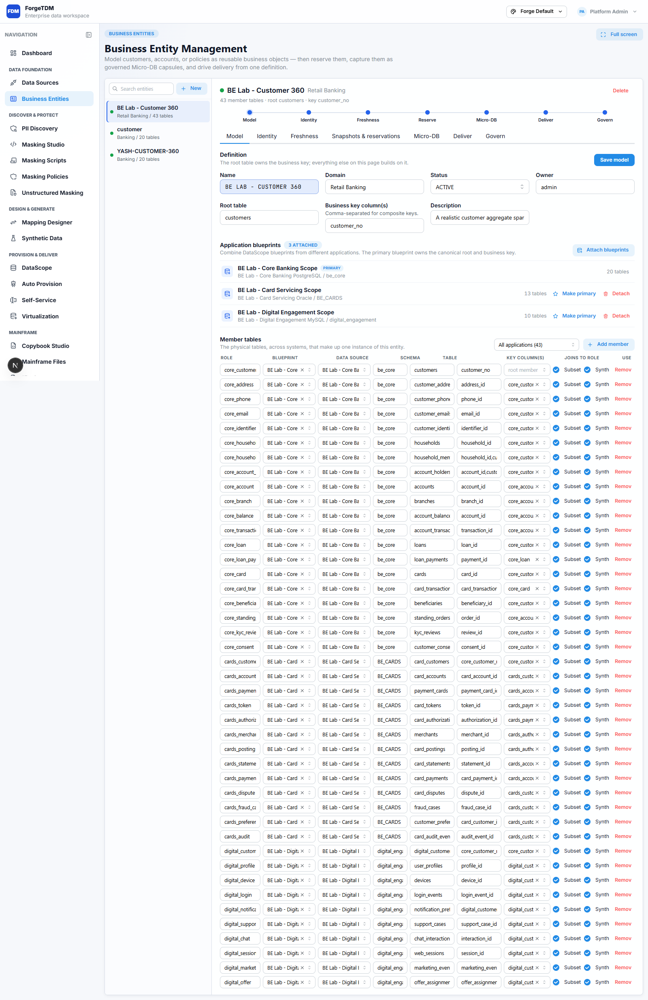
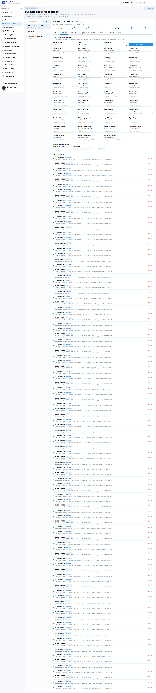
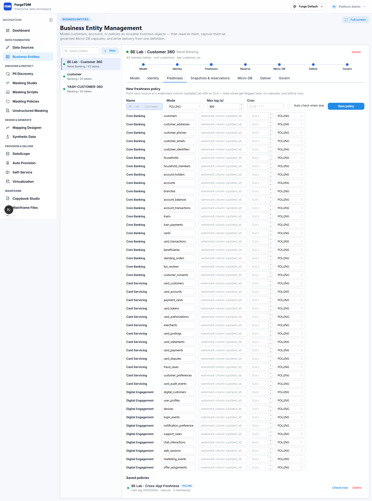
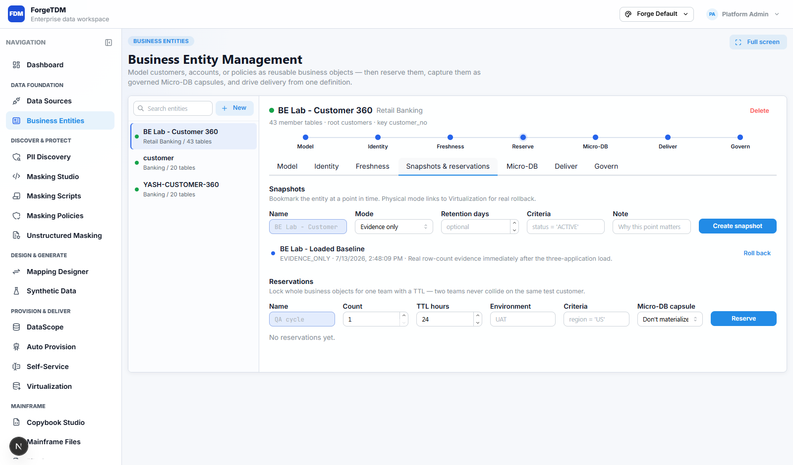
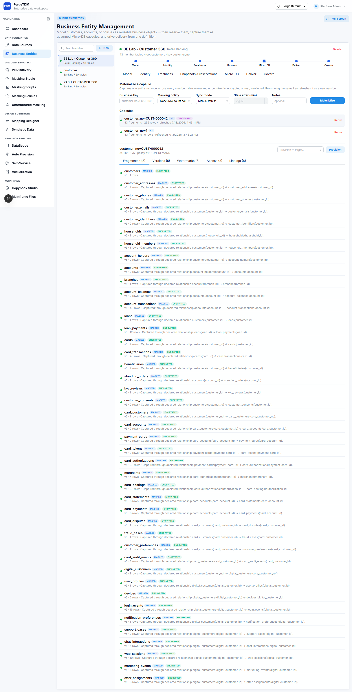
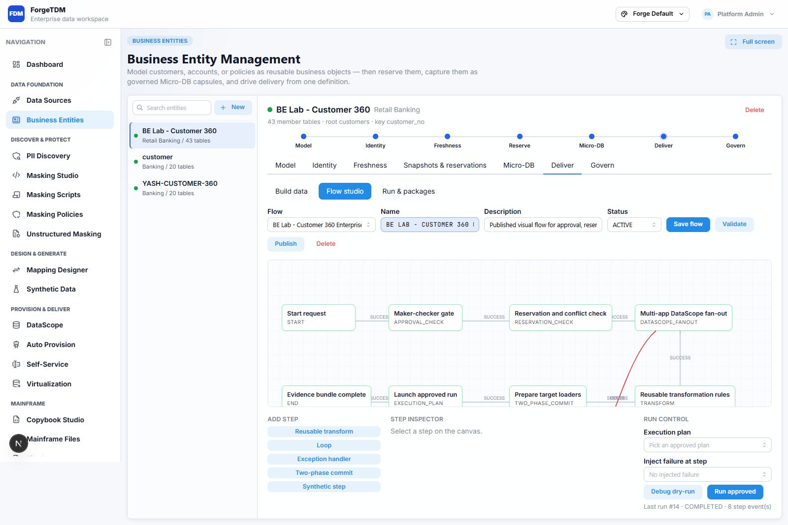
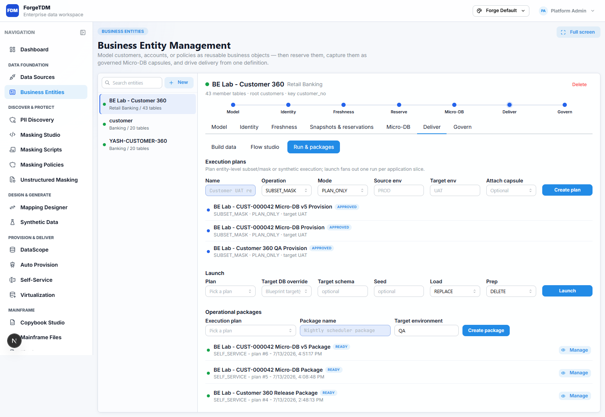
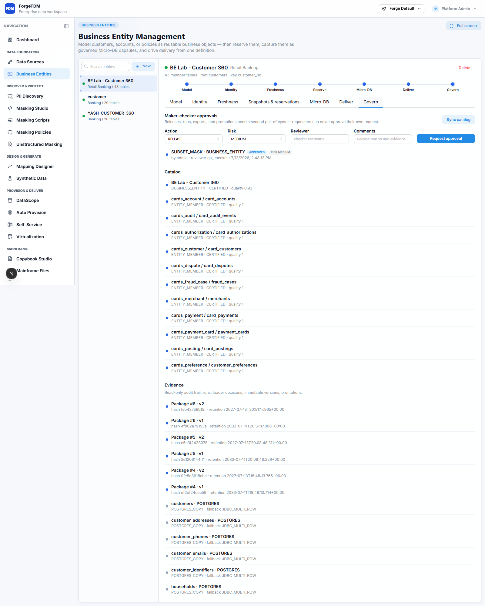
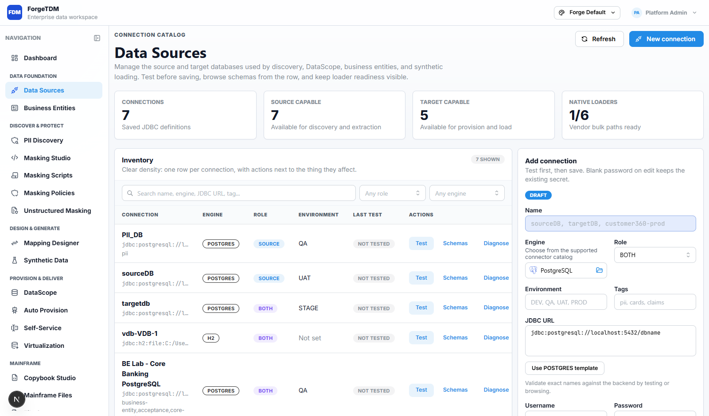
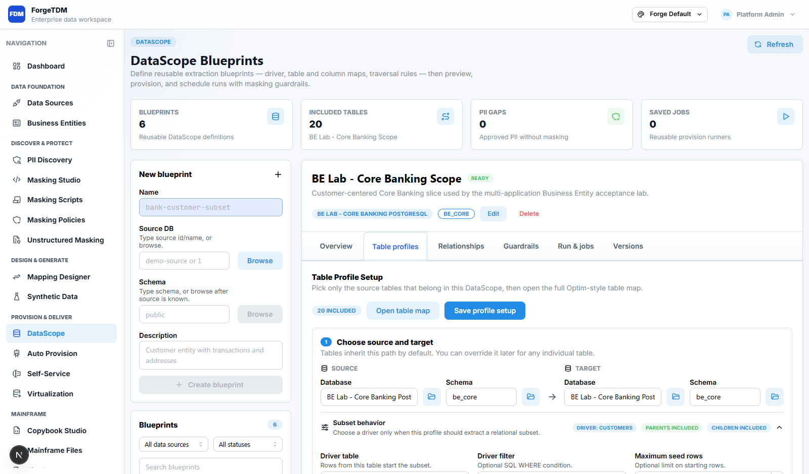

POSTGRES
BE Lab - Core Banking PostgreSQL
be_core
ReadinessREADY / 100
Metadata tables, columns
A working Business Entity lab joining Core Banking on PostgreSQL, Card Servicing on Oracle, and Digital Engagement on MySQL through one canonical customer identity.
The canonical customer begins in Core Banking as customers.customer_no. Oracle Card Servicing links through card_customers.core_customer_no; MySQL Digital Engagement links through digital_customers.core_customer_ref. Child tables remain connected through their native keys and relationships.
Each connection was tested through ForgeTDM and inspected through connector diagnostics.
be_core
BE_CARDS
digital_engagement
Counts come from immutable Business Entity snapshot 6, not estimates. Every member count is marked verified.
| Application | Engine | Schema | Table | Rows | Evidence |
|---|---|---|---|---|---|
| BE Lab - Card Servicing Oracle | ORACLE | BE_CARDS | card_payments | 12,000 | CAPTURED |
| BE Lab - Card Servicing Oracle | ORACLE | BE_CARDS | card_statements | 12,000 | CAPTURED |
| BE Lab - Card Servicing Oracle | ORACLE | BE_CARDS | card_disputes | 600 | CAPTURED |
| BE Lab - Card Servicing Oracle | ORACLE | BE_CARDS | customer_preferences | 2,000 | CAPTURED |
| BE Lab - Card Servicing Oracle | ORACLE | BE_CARDS | fraud_cases | 400 | CAPTURED |
| BE Lab - Card Servicing Oracle | ORACLE | BE_CARDS | card_tokens | 3,000 | CAPTURED |
| BE Lab - Card Servicing Oracle | ORACLE | BE_CARDS | payment_cards | 3,000 | CAPTURED |
| BE Lab - Card Servicing Oracle | ORACLE | BE_CARDS | card_authorizations | 50,000 | CAPTURED |
| BE Lab - Card Servicing Oracle | ORACLE | BE_CARDS | card_postings | 50,000 | CAPTURED |
| BE Lab - Card Servicing Oracle | ORACLE | BE_CARDS | merchants | 1,200 | CAPTURED |
| BE Lab - Card Servicing Oracle | ORACLE | BE_CARDS | card_audit_events | 5,000 | CAPTURED |
| BE Lab - Digital Engagement MySQL | MYSQL | digital_engagement | chat_interactions | 10,000 | CAPTURED |
| BE Lab - Digital Engagement MySQL | MYSQL | digital_engagement | support_cases | 4,000 | CAPTURED |
| BE Lab - Digital Engagement MySQL | MYSQL | digital_engagement | web_sessions | 20,000 | CAPTURED |
| BE Lab - Digital Engagement MySQL | MYSQL | digital_engagement | offer_assignments | 5,000 | CAPTURED |
| BE Lab - Digital Engagement MySQL | MYSQL | digital_engagement | marketing_events | 15,000 | CAPTURED |
| BE Lab - Digital Engagement MySQL | MYSQL | digital_engagement | user_profiles | 2,000 | CAPTURED |
| BE Lab - Digital Engagement MySQL | MYSQL | digital_engagement | digital_customers | 2,000 | CAPTURED |
| BE Lab - Digital Engagement MySQL | MYSQL | digital_engagement | devices | 4,000 | CAPTURED |
| BE Lab - Digital Engagement MySQL | MYSQL | digital_engagement | notification_preferences | 2,000 | CAPTURED |
| BE Lab - Digital Engagement MySQL | MYSQL | digital_engagement | login_events | 30,000 | CAPTURED |
| BE Lab - Card Servicing Oracle | ORACLE | BE_CARDS | card_accounts | 3,000 | CAPTURED |
| BE Lab - Core Banking PostgreSQL | POSTGRES | be_core | household_members | 2,000 | CAPTURED |
| BE Lab - Core Banking PostgreSQL | POSTGRES | be_core | households | 800 | CAPTURED |
| BE Lab - Core Banking PostgreSQL | POSTGRES | be_core | account_holders | 5,000 | CAPTURED |
| BE Lab - Core Banking PostgreSQL | POSTGRES | be_core | branches | 25 | CAPTURED |
| BE Lab - Core Banking PostgreSQL | POSTGRES | be_core | accounts | 4,000 | CAPTURED |
| BE Lab - Core Banking PostgreSQL | POSTGRES | be_core | customer_addresses | 4,000 | CAPTURED |
| BE Lab - Core Banking PostgreSQL | POSTGRES | be_core | customers | 2,000 | CAPTURED |
| BE Lab - Core Banking PostgreSQL | POSTGRES | be_core | customer_phones | 3,000 | CAPTURED |
| BE Lab - Core Banking PostgreSQL | POSTGRES | be_core | customer_identifiers | 4,000 | CAPTURED |
| BE Lab - Core Banking PostgreSQL | POSTGRES | be_core | customer_emails | 2,000 | CAPTURED |
| BE Lab - Core Banking PostgreSQL | POSTGRES | be_core | account_balances | 4,000 | CAPTURED |
| BE Lab - Core Banking PostgreSQL | POSTGRES | be_core | standing_orders | 2,000 | CAPTURED |
| BE Lab - Core Banking PostgreSQL | POSTGRES | be_core | beneficiaries | 4,000 | CAPTURED |
| BE Lab - Core Banking PostgreSQL | POSTGRES | be_core | kyc_reviews | 2,000 | CAPTURED |
| BE Lab - Card Servicing Oracle | ORACLE | BE_CARDS | card_customers | 2,000 | CAPTURED |
| BE Lab - Core Banking PostgreSQL | POSTGRES | be_core | customer_consents | 4,000 | CAPTURED |
| BE Lab - Core Banking PostgreSQL | POSTGRES | be_core | loans | 1,000 | CAPTURED |
| BE Lab - Core Banking PostgreSQL | POSTGRES | be_core | account_transactions | 80,000 | CAPTURED |
| BE Lab - Core Banking PostgreSQL | POSTGRES | be_core | loan_payments | 12,000 | CAPTURED |
| BE Lab - Core Banking PostgreSQL | POSTGRES | be_core | card_transactions | 60,000 | CAPTURED |
| BE Lab - Core Banking PostgreSQL | POSTGRES | be_core | cards | 3,000 | CAPTURED |
The same external value resolves to one canonical subject regardless of which application initiates the lookup.
| Lookup application | External ID | Result | Canonical key |
|---|---|---|---|
| Core Banking | CUST-000042 | MATCHED | CUST-000042 |
| Card Servicing | CUST-000042 | MATCHED | CUST-000042 |
| Digital Engagement | CUST-000042 | MATCHED | CUST-000042 |
This is a physical governed entity capsule for customer_no=CUST-000042, not a conceptual model or a saved DataScope filter. ForgeTDM recursively captured the declared relationships across PostgreSQL, Oracle, and MySQL, masked the PII, and encrypted every stored fragment.
sourceRead=false.The approved execution plans are intentionally saved as PLAN_ONLY. They can be reviewed and packaged safely; no physical provision was launched because this lab's target connections point to its source schemas.
| Application slice | DataScope | Schema | Members | Preferred loader | Fallback |
|---|---|---|---|---|---|
| Core Banking | BE Lab - Core Banking Scope | be_core | 20 | POSTGRES_COPY | JDBC_MULTI_ROW |
| Card Servicing | BE Lab - Card Servicing Scope | BE_CARDS | 13 | ORACLE_SQLLOADER_DIRECT_PATH | JDBC_BATCH |
| Digital Engagement | BE Lab - Digital Engagement Scope | digital_engagement | 10 | MYSQL_LOAD_DATA | JDBC_MULTI_ROW |
admin and signed by separate checker qa_checker.The acceptance work was allowed to change code where behavior was incorrect. These are product fixes, not fixture workarounds.
Run verify-forgetdm.ps1 at any time to recreate this evidence file.
| Result | Check | Evidence |
|---|---|---|
| PASS | Business Entity exists | entityId=8 |
| PASS | Business Entity spans three applications | members=43, sources=3 |
| PASS | Connector ready: BE Lab - Core Banking PostgreSQL | engine=POSTGRES, status=READY |
| PASS | Connector ready: BE Lab - Card Servicing Oracle | engine=ORACLE, status=READY |
| PASS | Connector ready: BE Lab - Digital Engagement MySQL | engine=MYSQL, status=READY |
| PASS | Identity resolves from Core Banking | canonical=CUST-000042 |
| PASS | Identity resolves from Card Servicing | canonical=CUST-000042 |
| PASS | Identity resolves from Digital Engagement | canonical=CUST-000042 |
| PASS | Seeded identity crosswalk is reusable | identitySubjects=100, linksPerSubject=3 |
| PASS | Cross-application freshness policy passes | status=FRESH, systems=3 |
| PASS | Immutable snapshot has verified row evidence | snapshotId=6, members=43, rows=437025 |
| PASS | PostgreSQL fixture row count | rows=198825 |
| PASS | Oracle fixture row count | rows=144200 |
| PASS | MySQL fixture row count | rows=94000 |
| PASS | Customer 360 Micro-DB exists and is active | capsuleId=2, version=5 |
| PASS | Micro-DB captures every member as an encrypted masked fragment | fragments=43, rows=265, invalid=0, empty=0 |
| PASS | Micro-DB spans all three physical applications | Core Banking=20 fragments/118 rows; Card Servicing=13 fragments/99 rows; Digital Engagement=10 fragments/48 rows |
| PASS | Micro-DB keeps version, freshness, access and lineage evidence | versions=5, watermarks=3, lineage=8 |
| PASS | Micro-DB access grants enforce owner and delegated provision scopes | ownerGrants=1, checkerProvisionGrants=1 |
| PASS | Micro-DB masks PII while preserving canonical identity | keysPreserved=True, rootPiiChanged=True |
| PASS | Micro-DB masking is deterministic across database engines | emailConsistent=True, phoneConsistent=True |
| PASS | Maker-checker approval is signed by a separate user | maker=admin, checker=qa_checker |
| PASS | Governance actor spoof is rejected | admin cannot approve as qa_checker |
| PASS | Approved saved execution plan fans out by application | planId=4, slices=3, mappedMembers=43 |
| PASS | Reusable saved job package has an immutable version | packageId=4, versions=2 |
| PASS | Approved execution plan is pinned to the current Micro-DB version | planId=6, capsuleId=2, version=5 |
| PASS | Micro-DB saved job package is reusable and immutable | packageId=6, planId=6, versions=2 |
| PASS | Business Entity catalog is complete | catalogAssets=44 |
| PASS | Published visual flow validates and completes a dry run | flowId=5, validation=PASS, debug=COMPLETED |
| PASS | DataScope preview is bounded and valid: dataset 32 | rows=939, warnings=0 |
| PASS | DataScope preview is bounded and valid: dataset 33 | rows=295, warnings=0 |
| PASS | DataScope preview is bounded and valid: dataset 34 | rows=144, warnings=0 |
The setup is idempotent: source connections, DataScopes, members, identities, policy, governance, flow, plan, and package are reconciled for future use.
Open http://localhost:3000/business-entities, choose BE Lab - Customer 360, then review Model, Identity, Freshness, Snapshots & reservations, Deliver, and Govern. DataScope definitions are under DataScope.
The recording is local and uses the real saved entity and jobs.










These scripts rebuild the acceptance schemas and deterministic data. They are destructive to the named lab schemas/users only.
\set ON_ERROR_STOP on
DROP SCHEMA IF EXISTS be_core CASCADE;
CREATE SCHEMA be_core AUTHORIZATION CURRENT_USER;
SET search_path TO be_core;
CREATE TABLE branches (
branch_id integer PRIMARY KEY,
branch_code varchar(12) NOT NULL UNIQUE,
branch_name varchar(100) NOT NULL,
state_code char(2) NOT NULL,
opened_on date NOT NULL
);
CREATE TABLE households (
household_id bigint PRIMARY KEY,
household_ref varchar(20) NOT NULL UNIQUE,
segment varchar(20) NOT NULL,
created_at timestamp NOT NULL
);
CREATE TABLE customers (
customer_id bigint PRIMARY KEY,
customer_no varchar(20) NOT NULL UNIQUE,
crm_party_id varchar(20) NOT NULL UNIQUE,
household_id bigint REFERENCES households(household_id),
first_name varchar(60) NOT NULL,
last_name varchar(60) NOT NULL,
date_of_birth date NOT NULL,
ssn varchar(11) NOT NULL UNIQUE,
customer_status varchar(20) NOT NULL,
risk_rating varchar(12) NOT NULL,
created_at timestamp NOT NULL,
updated_at timestamp NOT NULL
);
CREATE TABLE customer_addresses (
address_id bigint PRIMARY KEY,
customer_id bigint NOT NULL REFERENCES customers(customer_id),
address_type varchar(15) NOT NULL,
line1 varchar(120) NOT NULL,
city varchar(60) NOT NULL,
state_code char(2) NOT NULL,
postal_code varchar(10) NOT NULL,
is_primary boolean NOT NULL
);
CREATE TABLE customer_phones (
phone_id bigint PRIMARY KEY,
customer_id bigint NOT NULL REFERENCES customers(customer_id),
phone_type varchar(15) NOT NULL,
phone_number varchar(20) NOT NULL,
verified_at timestamp
);
CREATE TABLE customer_emails (
email_id bigint PRIMARY KEY,
customer_id bigint NOT NULL REFERENCES customers(customer_id),
email_address varchar(160) NOT NULL UNIQUE,
is_primary boolean NOT NULL,
verified_at timestamp
);
CREATE TABLE customer_identifiers (
identifier_id bigint PRIMARY KEY,
customer_id bigint NOT NULL REFERENCES customers(customer_id),
identifier_type varchar(30) NOT NULL,
identifier_value varchar(80) NOT NULL,
issuing_country char(2) NOT NULL,
expires_on date,
UNIQUE(identifier_type, identifier_value)
);
CREATE TABLE household_members (
household_id bigint NOT NULL REFERENCES households(household_id),
customer_id bigint NOT NULL REFERENCES customers(customer_id),
member_role varchar(20) NOT NULL,
joined_on date NOT NULL,
PRIMARY KEY(household_id, customer_id)
);
CREATE TABLE accounts (
account_id bigint PRIMARY KEY,
account_no varchar(24) NOT NULL UNIQUE,
branch_id integer NOT NULL REFERENCES branches(branch_id),
product_code varchar(20) NOT NULL,
account_status varchar(20) NOT NULL,
opened_on date NOT NULL,
closed_on date,
currency_code char(3) NOT NULL
);
CREATE TABLE account_holders (
account_id bigint NOT NULL REFERENCES accounts(account_id),
customer_id bigint NOT NULL REFERENCES customers(customer_id),
holder_role varchar(20) NOT NULL,
ownership_pct numeric(5,2) NOT NULL,
PRIMARY KEY(account_id, customer_id)
);
CREATE TABLE account_balances (
account_id bigint PRIMARY KEY REFERENCES accounts(account_id),
ledger_balance numeric(16,2) NOT NULL,
available_balance numeric(16,2) NOT NULL,
as_of timestamp NOT NULL
);
CREATE TABLE account_transactions (
transaction_id bigint PRIMARY KEY,
account_id bigint NOT NULL REFERENCES accounts(account_id),
transaction_ts timestamp NOT NULL,
transaction_type varchar(20) NOT NULL,
amount numeric(14,2) NOT NULL,
merchant_description varchar(120),
channel varchar(20) NOT NULL,
reference_no varchar(36) NOT NULL UNIQUE
);
CREATE TABLE loans (
loan_id bigint PRIMARY KEY,
customer_id bigint NOT NULL REFERENCES customers(customer_id),
account_id bigint REFERENCES accounts(account_id),
loan_type varchar(20) NOT NULL,
principal_amount numeric(16,2) NOT NULL,
outstanding_amount numeric(16,2) NOT NULL,
interest_rate numeric(7,4) NOT NULL,
originated_on date NOT NULL,
maturity_on date NOT NULL,
loan_status varchar(20) NOT NULL
);
CREATE TABLE loan_payments (
payment_id bigint PRIMARY KEY,
loan_id bigint NOT NULL REFERENCES loans(loan_id),
payment_date date NOT NULL,
principal_paid numeric(14,2) NOT NULL,
interest_paid numeric(14,2) NOT NULL,
payment_status varchar(20) NOT NULL
);
CREATE TABLE cards (
card_id bigint PRIMARY KEY,
account_id bigint NOT NULL REFERENCES accounts(account_id),
customer_id bigint NOT NULL REFERENCES customers(customer_id),
card_ref varchar(24) NOT NULL UNIQUE,
pan varchar(19) NOT NULL UNIQUE,
expiry_month integer NOT NULL,
expiry_year integer NOT NULL,
card_status varchar(20) NOT NULL
);
CREATE TABLE card_transactions (
card_transaction_id bigint PRIMARY KEY,
card_id bigint NOT NULL REFERENCES cards(card_id),
posted_at timestamp NOT NULL,
merchant_name varchar(120) NOT NULL,
merchant_category varchar(8) NOT NULL,
amount numeric(14,2) NOT NULL,
currency_code char(3) NOT NULL,
authorization_code varchar(12) NOT NULL
);
CREATE TABLE beneficiaries (
beneficiary_id bigint PRIMARY KEY,
customer_id bigint NOT NULL REFERENCES customers(customer_id),
beneficiary_name varchar(120) NOT NULL,
bank_routing_no varchar(12) NOT NULL,
bank_account_no varchar(30) NOT NULL,
relationship_type varchar(20) NOT NULL,
active boolean NOT NULL
);
CREATE TABLE standing_orders (
order_id bigint PRIMARY KEY,
account_id bigint NOT NULL REFERENCES accounts(account_id),
beneficiary_id bigint NOT NULL REFERENCES beneficiaries(beneficiary_id),
amount numeric(14,2) NOT NULL,
frequency varchar(20) NOT NULL,
next_run_date date NOT NULL,
order_status varchar(20) NOT NULL
);
CREATE TABLE kyc_reviews (
review_id bigint PRIMARY KEY,
customer_id bigint NOT NULL REFERENCES customers(customer_id),
review_date date NOT NULL,
review_type varchar(20) NOT NULL,
outcome varchar(20) NOT NULL,
analyst varchar(80) NOT NULL,
next_review_date date NOT NULL
);
CREATE TABLE customer_consents (
consent_id bigint PRIMARY KEY,
customer_id bigint NOT NULL REFERENCES customers(customer_id),
consent_type varchar(30) NOT NULL,
consent_status varchar(20) NOT NULL,
captured_at timestamp NOT NULL,
source_channel varchar(20) NOT NULL
);
INSERT INTO branches
SELECT i, 'BR-' || lpad(i::text, 3, '0'), 'Retail Branch ' || i,
(ARRAY['NY','NJ','CA','TX','FL','IL','WA','MA','GA','NC'])[1 + ((i - 1) % 10)],
current_date - (1000 + i * 17)
FROM generate_series(1,25) i;
INSERT INTO households
SELECT i, 'HH-' || lpad(i::text, 6, '0'),
(ARRAY['MASS_AFFLUENT','RETAIL','PRIVATE','STUDENT'])[1 + ((i - 1) % 4)],
current_timestamp - ((i % 700) || ' days')::interval
FROM generate_series(1,800) i;
INSERT INTO customers
SELECT i,
'CUST-' || lpad(i::text, 6, '0'),
'CRM-' || lpad(i::text, 6, '0'),
1 + ((i - 1) % 800),
(ARRAY['James','Mary','Robert','Patricia','John','Jennifer','Michael','Linda','David','Elizabeth','William','Susan'])[1 + ((i - 1) % 12)],
(ARRAY['Smith','Johnson','Williams','Brown','Jones','Garcia','Miller','Davis','Wilson','Anderson','Taylor','Thomas'])[1 + (((i * 7) - 1) % 12)],
date '1950-01-01' + ((i * 37) % 19000),
'9' || lpad((i % 100)::text,2,'0') || '-' || lpad((i % 100)::text,2,'0') || '-' || lpad(i::text,4,'0'),
CASE WHEN i % 41 = 0 THEN 'RESTRICTED' WHEN i % 29 = 0 THEN 'DORMANT' ELSE 'ACTIVE' END,
CASE WHEN i % 17 = 0 THEN 'HIGH' WHEN i % 5 = 0 THEN 'MEDIUM' ELSE 'LOW' END,
current_timestamp - ((900 + i % 1200) || ' days')::interval,
current_timestamp - ((i % 180) || ' days')::interval
FROM generate_series(1,2000) i;
INSERT INTO customer_addresses
SELECT i, 1 + ((i - 1) % 2000), CASE WHEN i <= 2000 THEN 'HOME' ELSE 'MAILING' END,
(100 + (i % 9800)) || ' ' || (ARRAY['Main','Oak','Maple','Cedar','Park','Lake','Hill','Washington'])[1 + ((i - 1) % 8)] || ' Street',
(ARRAY['New York','Jersey City','Los Angeles','Austin','Miami','Chicago','Seattle','Boston'])[1 + ((i - 1) % 8)],
(ARRAY['NY','NJ','CA','TX','FL','IL','WA','MA'])[1 + ((i - 1) % 8)],
lpad((10000 + (i * 37) % 89999)::text,5,'0'), i <= 2000
FROM generate_series(1,4000) i;
INSERT INTO customer_phones
SELECT i, 1 + ((i - 1) % 2000), CASE WHEN i <= 2000 THEN 'MOBILE' ELSE 'HOME' END,
'+1-212-' || lpad(((i * 17) % 1000)::text,3,'0') || '-' || lpad(i::text,4,'0'),
CASE WHEN i % 7 = 0 THEN NULL ELSE current_timestamp - ((i % 300) || ' days')::interval END
FROM generate_series(1,3000) i;
INSERT INTO customer_emails
SELECT i, i, lower('customer' || i || '@forgetdm-bank.example'), true,
CASE WHEN i % 13 = 0 THEN NULL ELSE current_timestamp - ((i % 300) || ' days')::interval END
FROM generate_series(1,2000) i;
INSERT INTO customer_identifiers
SELECT i, 1 + ((i - 1) % 2000), CASE WHEN i <= 2000 THEN 'DRIVER_LICENSE' ELSE 'PASSPORT' END,
CASE WHEN i <= 2000 THEN 'DL-NY-' || lpad(i::text,8,'0') ELSE 'P' || lpad(i::text,9,'0') END,
'US', current_date + (365 + i % 1800)
FROM generate_series(1,4000) i;
INSERT INTO household_members
SELECT 1 + ((i - 1) % 800), i, CASE WHEN i <= 800 THEN 'PRIMARY' ELSE 'MEMBER' END,
current_date - (300 + i % 1800)
FROM generate_series(1,2000) i;
INSERT INTO accounts
SELECT i, '100200' || lpad(i::text,10,'0'), 1 + ((i - 1) % 25),
(ARRAY['CHECKING','SAVINGS','MONEY_MARKET','BROKERAGE'])[1 + ((i - 1) % 4)],
CASE WHEN i % 67 = 0 THEN 'FROZEN' WHEN i % 43 = 0 THEN 'DORMANT' ELSE 'OPEN' END,
current_date - (180 + i % 2500), NULL, 'USD'
FROM generate_series(1,4000) i;
INSERT INTO account_holders
SELECT i, 1 + ((i - 1) % 2000), 'PRIMARY', 100.00 FROM generate_series(1,4000) i;
INSERT INTO account_holders
SELECT i, 1 + ((i + 799) % 2000), 'JOINT', 50.00 FROM generate_series(1,1000) i;
INSERT INTO account_balances
SELECT i, round((500 + (i * 97 % 125000))::numeric,2), round((450 + (i * 91 % 120000))::numeric,2),
current_timestamp - ((i % 1440) || ' minutes')::interval
FROM generate_series(1,4000) i;
INSERT INTO account_transactions
SELECT i, 1 + ((i - 1) % 4000), current_timestamp - ((i % 525600) || ' minutes')::interval,
(ARRAY['DEBIT','CREDIT','TRANSFER','FEE','ACH'])[1 + ((i - 1) % 5)],
round((5 + (i * 13 % 499500) / 100.0)::numeric,2),
'Merchant ' || (1 + i % 1200),
(ARRAY['CARD','ONLINE','BRANCH','ATM','MOBILE'])[1 + ((i - 1) % 5)],
'TXN-' || lpad(i::text,12,'0')
FROM generate_series(1,80000) i;
INSERT INTO loans
SELECT i, 1 + ((i - 1) % 2000), 1 + ((i - 1) % 4000),
(ARRAY['MORTGAGE','AUTO','PERSONAL','HELOC'])[1 + ((i - 1) % 4)],
10000 + (i * 791 % 490000), 5000 + (i * 613 % 250000),
2.7500 + ((i % 500) / 100.0), current_date - (200 + i % 1600), current_date + (900 + i % 8000),
CASE WHEN i % 53 = 0 THEN 'DELINQUENT' ELSE 'ACTIVE' END
FROM generate_series(1,1000) i;
INSERT INTO loan_payments
SELECT i, 1 + ((i - 1) % 1000), current_date - (i % 900),
round((100 + (i * 19 % 2000))::numeric,2), round((10 + (i * 7 % 400))::numeric,2),
CASE WHEN i % 79 = 0 THEN 'RETURNED' ELSE 'POSTED' END
FROM generate_series(1,12000) i;
INSERT INTO cards
SELECT i, 1 + ((i - 1) % 4000), 1 + ((i - 1) % 2000), 'CARD-' || lpad(i::text,8,'0'),
'411111' || lpad(i::text,10,'0'), 1 + (i % 12), 2027 + (i % 5),
CASE WHEN i % 71 = 0 THEN 'BLOCKED' ELSE 'ACTIVE' END
FROM generate_series(1,3000) i;
INSERT INTO card_transactions
SELECT i, 1 + ((i - 1) % 3000), current_timestamp - ((i % 525600) || ' minutes')::interval,
'Merchant ' || (1 + i % 1200), lpad((5000 + i % 500)::text,4,'0'),
round((2 + (i * 11 % 250000) / 100.0)::numeric,2), 'USD', lpad((i % 1000000)::text,6,'0')
FROM generate_series(1,60000) i;
INSERT INTO beneficiaries
SELECT i, 1 + ((i - 1) % 2000), 'Beneficiary ' || i, lpad((21000000 + i % 70000000)::text,9,'0'),
lpad((7000000000::bigint + i)::text,12,'0'), (ARRAY['FAMILY','VENDOR','OWN_ACCOUNT','CHARITY'])[1 + ((i - 1) % 4)], i % 23 <> 0
FROM generate_series(1,4000) i;
INSERT INTO standing_orders
SELECT i, 1 + ((i - 1) % 4000), 1 + ((i - 1) % 4000), round((25 + i % 1500)::numeric,2),
(ARRAY['WEEKLY','BIWEEKLY','MONTHLY'])[1 + ((i - 1) % 3)], current_date + (1 + i % 30),
CASE WHEN i % 31 = 0 THEN 'PAUSED' ELSE 'ACTIVE' END
FROM generate_series(1,2000) i;
INSERT INTO kyc_reviews
SELECT i, i, current_date - (i % 720), CASE WHEN i % 5 = 0 THEN 'ENHANCED' ELSE 'PERIODIC' END,
CASE WHEN i % 37 = 0 THEN 'ESCALATED' ELSE 'APPROVED' END, 'Analyst ' || (1 + i % 25), current_date + (180 + i % 540)
FROM generate_series(1,2000) i;
INSERT INTO customer_consents
SELECT i, 1 + ((i - 1) % 2000), CASE WHEN i <= 2000 THEN 'PRIVACY' ELSE 'MARKETING' END,
CASE WHEN i % 19 = 0 THEN 'REVOKED' ELSE 'GRANTED' END,
current_timestamp - ((i % 600) || ' days')::interval,
(ARRAY['WEB','MOBILE','BRANCH','CALL_CENTER'])[1 + ((i - 1) % 4)]
FROM generate_series(1,4000) i;
CREATE INDEX ix_addresses_customer ON customer_addresses(customer_id);
CREATE INDEX ix_accounts_branch ON accounts(branch_id);
CREATE INDEX ix_account_holders_customer ON account_holders(customer_id);
CREATE INDEX ix_account_transactions_account ON account_transactions(account_id, transaction_ts);
CREATE INDEX ix_loans_customer ON loans(customer_id);
CREATE INDEX ix_cards_customer ON cards(customer_id);
CREATE INDEX ix_card_transactions_card ON card_transactions(card_id, posted_at);
CREATE INDEX ix_beneficiaries_customer ON beneficiaries(customer_id);
ANALYZE be_core.customers;
whenever sqlerror exit sql.sqlcode
set define off
set serveroutput on
declare
n number;
begin
select count(*) into n from dba_users where username = 'BE_CARDS';
if n > 0 then execute immediate 'drop user BE_CARDS cascade'; end if;
end;
/
create user BE_CARDS identified by ForgeTdm2026 default tablespace USERS temporary tablespace TEMP quota unlimited on USERS;
grant create session, create table, create view, create sequence, create procedure to BE_CARDS;
connect BE_CARDS/ForgeTdm2026@XE
create table card_customers (
card_customer_id number(12) primary key,
party_ref varchar2(20) not null unique,
core_customer_no varchar2(20) not null unique,
first_name varchar2(60) not null,
last_name varchar2(60) not null,
date_of_birth date not null,
email_address varchar2(160),
mobile_phone varchar2(24),
servicing_status varchar2(20) not null,
created_at timestamp not null,
updated_at timestamp not null
);
create table card_accounts (
card_account_id number(12) primary key,
card_customer_id number(12) not null references card_customers(card_customer_id),
core_account_ref varchar2(24) not null,
account_status varchar2(20) not null,
credit_limit number(14,2) not null,
current_balance number(14,2) not null,
opened_on date not null,
billing_cycle_day number(2) not null
);
create table payment_cards (
payment_card_id number(12) primary key,
card_account_id number(12) not null references card_accounts(card_account_id),
card_customer_id number(12) not null references card_customers(card_customer_id),
core_card_ref varchar2(24) not null unique,
pan varchar2(19) not null unique,
card_type varchar2(20) not null,
expiry_month number(2) not null,
expiry_year number(4) not null,
card_status varchar2(20) not null
);
create table card_tokens (
token_id number(12) primary key,
payment_card_id number(12) not null references payment_cards(payment_card_id),
token_reference varchar2(64) not null unique,
wallet_provider varchar2(30) not null,
device_reference varchar2(60),
token_status varchar2(20) not null,
created_at timestamp not null
);
create table merchants (
merchant_id number(12) primary key,
merchant_name varchar2(120) not null,
merchant_category varchar2(8) not null,
city varchar2(60) not null,
state_code char(2) not null,
risk_tier varchar2(12) not null
);
create table card_authorizations (
authorization_id number(14) primary key,
payment_card_id number(12) not null references payment_cards(payment_card_id),
merchant_id number(12) not null references merchants(merchant_id),
authorization_ts timestamp not null,
authorization_code varchar2(12) not null,
amount number(14,2) not null,
currency_code char(3) not null,
response_code varchar2(5) not null,
channel varchar2(20) not null
);
create table card_postings (
posting_id number(14) primary key,
authorization_id number(14) references card_authorizations(authorization_id),
card_account_id number(12) not null references card_accounts(card_account_id),
posted_at timestamp not null,
posting_type varchar2(20) not null,
amount number(14,2) not null,
description varchar2(160) not null
);
create table card_statements (
statement_id number(14) primary key,
card_account_id number(12) not null references card_accounts(card_account_id),
cycle_start date not null,
cycle_end date not null,
statement_balance number(14,2) not null,
minimum_due number(14,2) not null,
due_date date not null,
statement_status varchar2(20) not null
);
create table card_payments (
card_payment_id number(14) primary key,
card_account_id number(12) not null references card_accounts(card_account_id),
payment_ts timestamp not null,
amount number(14,2) not null,
payment_method varchar2(20) not null,
source_account_last4 char(4),
payment_status varchar2(20) not null
);
create table card_disputes (
dispute_id number(12) primary key,
card_customer_id number(12) not null references card_customers(card_customer_id),
posting_id number(14) not null references card_postings(posting_id),
opened_at timestamp not null,
dispute_reason varchar2(40) not null,
disputed_amount number(14,2) not null,
dispute_status varchar2(20) not null,
resolved_at timestamp
);
create table fraud_cases (
fraud_case_id number(12) primary key,
card_customer_id number(12) not null references card_customers(card_customer_id),
payment_card_id number(12) references payment_cards(payment_card_id),
opened_at timestamp not null,
case_type varchar2(30) not null,
risk_score number(5,2) not null,
case_status varchar2(20) not null,
investigator varchar2(80)
);
create table customer_preferences (
card_customer_id number(12) primary key references card_customers(card_customer_id),
statement_delivery varchar2(20) not null,
sms_alerts char(1) not null,
email_alerts char(1) not null,
travel_notice_country char(2),
preferred_language varchar2(10) not null,
updated_at timestamp not null
);
create table card_audit_events (
audit_event_id number(14) primary key,
card_customer_id number(12) references card_customers(card_customer_id),
event_ts timestamp not null,
event_type varchar2(30) not null,
actor_id varchar2(40) not null,
source_system varchar2(30) not null,
event_detail varchar2(240)
);
insert into card_customers
select 500000 + level,
'CARDPARTY-' || lpad(level,6,'0'),
'CUST-' || lpad(level,6,'0'),
decode(mod(level-1,8),0,'James',1,'Mary',2,'Robert',3,'Patricia',4,'John',5,'Jennifer',6,'Michael','Linda'),
decode(mod(level*7-1,8),0,'Smith',1,'Johnson',2,'Williams',3,'Brown',4,'Jones',5,'Garcia',6,'Miller','Davis'),
date '1950-01-01' + mod(level * 37,19000),
'customer' || level || '@forgetdm-bank.example',
'+1-212-' || lpad(mod(level*17,1000),3,'0') || '-' || lpad(level,4,'0'),
case when mod(level,41)=0 then 'RESTRICTED' else 'ACTIVE' end,
systimestamp - numtodsinterval(900 + mod(level,1200),'DAY'),
systimestamp - numtodsinterval(mod(level,180),'DAY')
from dual connect by level <= 2000;
insert into card_accounts
select 600000 + level, 500000 + mod(level-1,2000) + 1,
'100200' || lpad(mod(level-1,4000)+1,10,'0'),
case when mod(level,53)=0 then 'SUSPENDED' else 'OPEN' end,
2500 + mod(level*137,47500), mod(level*97,3000000)/100,
trunc(sysdate) - (180 + mod(level,2200)), 1 + mod(level,28)
from dual connect by level <= 3000;
insert into payment_cards
select 700000 + level, 600000 + level, 500000 + mod(level-1,2000) + 1,
'CARD-' || lpad(level,8,'0'), '411111' || lpad(level,10,'0'),
decode(mod(level-1,3),0,'VISA',1,'MASTERCARD','DEBIT'),
1 + mod(level,12), 2027 + mod(level,5),
case when mod(level,71)=0 then 'BLOCKED' else 'ACTIVE' end
from dual connect by level <= 3000;
insert into card_tokens
select 800000 + level, 700000 + level, 'TOK-' || lpad(level,20,'0'),
decode(mod(level-1,3),0,'APPLE_PAY',1,'GOOGLE_PAY','SAMSUNG_PAY'),
'DEVICE-' || lpad(level,10,'0'), case when mod(level,73)=0 then 'SUSPENDED' else 'ACTIVE' end,
systimestamp - numtodsinterval(mod(level,500),'DAY')
from dual connect by level <= 3000;
insert into merchants
select 900000 + level, 'Merchant ' || level, lpad(5000 + mod(level,500),4,'0'),
decode(mod(level-1,8),0,'New York',1,'Jersey City',2,'Los Angeles',3,'Austin',4,'Miami',5,'Chicago',6,'Seattle','Boston'),
decode(mod(level-1,8),0,'NY',1,'NJ',2,'CA',3,'TX',4,'FL',5,'IL',6,'WA','MA'),
case when mod(level,23)=0 then 'HIGH' when mod(level,5)=0 then 'MEDIUM' else 'LOW' end
from dual connect by level <= 1200;
insert into card_authorizations
select 1000000 + level, 700000 + mod(level-1,3000) + 1, 900000 + mod(level-1,1200) + 1,
systimestamp - numtodsinterval(mod(level,525600),'MINUTE'), lpad(mod(level,1000000),6,'0'),
2 + mod(level*11,250000)/100, 'USD', case when mod(level,89)=0 then '05' else '00' end,
decode(mod(level-1,4),0,'ECOMMERCE',1,'CHIP',2,'CONTACTLESS','MOBILE')
from dual connect by level <= 50000;
insert into card_postings
select 1100000 + level, 1000000 + level, 600000 + mod(level-1,3000) + 1,
systimestamp - numtodsinterval(mod(level,525600),'MINUTE'),
decode(mod(level-1,3),0,'PURCHASE',1,'REFUND','FEE'),
2 + mod(level*13,300000)/100, 'Card posting ' || level
from dual connect by level <= 50000;
insert into card_statements
select 1200000 + level, 600000 + mod(level-1,3000) + 1,
trunc(sysdate,'MM') - (30 * mod(level,24)), trunc(sysdate,'MM') - (30 * mod(level,24)) + 29,
mod(level*211,5000000)/100, mod(level*17,100000)/100,
trunc(sysdate) + mod(level,28), case when mod(level,17)=0 then 'PAST_DUE' else 'ISSUED' end
from dual connect by level <= 12000;
insert into card_payments
select 1300000 + level, 600000 + mod(level-1,3000) + 1,
systimestamp - numtodsinterval(mod(level,525600),'MINUTE'), 25 + mod(level*29,250000)/100,
decode(mod(level-1,4),0,'ACH',1,'DEBIT_CARD',2,'BRANCH','MOBILE'),
lpad(mod(level,10000),4,'0'), case when mod(level,97)=0 then 'RETURNED' else 'POSTED' end
from dual connect by level <= 12000;
insert into card_disputes
select 1400000 + level, 500000 + mod(level-1,2000) + 1, 1100000 + level,
systimestamp - numtodsinterval(mod(level,365),'DAY'),
decode(mod(level-1,4),0,'FRAUD',1,'DUPLICATE',2,'SERVICE_NOT_RECEIVED','INCORRECT_AMOUNT'),
10 + mod(level*31,150000)/100, decode(mod(level-1,3),0,'OPEN',1,'INVESTIGATING','RESOLVED'),
case when mod(level-1,3)=2 then systimestamp - numtodsinterval(mod(level,30),'DAY') else null end
from dual connect by level <= 600;
insert into fraud_cases
select 1500000 + level,
500000 + mod(mod(level*7-1,3000),2000) + 1,
700000 + mod(level*7-1,3000) + 1,
systimestamp - numtodsinterval(mod(level,365),'DAY'),
decode(mod(level-1,3),0,'ACCOUNT_TAKEOVER',1,'CARD_NOT_PRESENT','LOST_STOLEN'),
25 + mod(level*17,7500)/100, decode(mod(level-1,3),0,'OPEN',1,'REVIEW','CLOSED'), 'Investigator ' || (1 + mod(level,20))
from dual connect by level <= 400;
insert into customer_preferences
select 500000 + level, decode(mod(level,2),0,'ELECTRONIC','PAPER'),
case when mod(level,7)=0 then 'N' else 'Y' end, case when mod(level,11)=0 then 'N' else 'Y' end,
case when mod(level,19)=0 then 'GB' else null end, decode(mod(level-1,3),0,'EN',1,'ES','FR'),
systimestamp - numtodsinterval(mod(level,180),'DAY')
from dual connect by level <= 2000;
insert into card_audit_events
select 1600000 + level, 500000 + mod(level-1,2000) + 1,
systimestamp - numtodsinterval(mod(level,525600),'MINUTE'),
decode(mod(level-1,5),0,'PROFILE_VIEW',1,'CARD_UPDATE',2,'PAYMENT_POSTED',3,'ALERT_SENT','CASE_REVIEW'),
'USER-' || lpad(1 + mod(level,75),4,'0'), 'CARD_SERVICING', 'Acceptance event ' || level
from dual connect by level <= 5000;
create index ix_card_accounts_customer on card_accounts(card_customer_id);
create index ix_payment_cards_customer on payment_cards(card_customer_id);
create index ix_authorizations_card on card_authorizations(payment_card_id, authorization_ts);
create index ix_postings_account on card_postings(card_account_id, posted_at);
create index ix_disputes_customer on card_disputes(card_customer_id);
create index ix_fraud_customer on fraud_cases(card_customer_id);
commit;
begin
dbms_stats.gather_schema_stats('BE_CARDS', cascade => true);
end;
/
exit
SET SESSION cte_max_recursion_depth = 100000;
DROP DATABASE IF EXISTS digital_engagement;
CREATE DATABASE digital_engagement CHARACTER SET utf8mb4 COLLATE utf8mb4_0900_ai_ci;
DROP USER IF EXISTS 'be_digital'@'localhost';
CREATE USER 'be_digital'@'localhost' IDENTIFIED BY 'ForgeTdm2026!';
GRANT SELECT, INSERT, UPDATE, DELETE, CREATE, ALTER, INDEX, REFERENCES ON digital_engagement.* TO 'be_digital'@'localhost';
USE digital_engagement;
CREATE TABLE seed_numbers (n int PRIMARY KEY);
INSERT INTO seed_numbers(n)
WITH RECURSIVE seq AS (
SELECT 1 AS n
UNION ALL
SELECT n + 1 FROM seq WHERE n < 100000
)
SELECT n FROM seq;
CREATE TABLE digital_customers (
digital_customer_id bigint PRIMARY KEY,
crm_party_id varchar(20) NOT NULL UNIQUE,
core_customer_ref varchar(20) NOT NULL UNIQUE,
username varchar(80) NOT NULL UNIQUE,
email_address varchar(160) NOT NULL,
mobile_phone varchar(24),
registration_channel varchar(20) NOT NULL,
digital_status varchar(20) NOT NULL,
created_at timestamp NOT NULL,
updated_at timestamp NOT NULL
) ENGINE=InnoDB;
CREATE TABLE user_profiles (
profile_id bigint PRIMARY KEY,
digital_customer_id bigint NOT NULL UNIQUE,
display_name varchar(120) NOT NULL,
preferred_language varchar(10) NOT NULL,
time_zone varchar(40) NOT NULL,
accessibility_mode varchar(20),
last_profile_update timestamp NOT NULL,
CONSTRAINT fk_profile_customer FOREIGN KEY (digital_customer_id) REFERENCES digital_customers(digital_customer_id)
) ENGINE=InnoDB;
CREATE TABLE devices (
device_id bigint PRIMARY KEY,
digital_customer_id bigint NOT NULL,
device_fingerprint varchar(80) NOT NULL UNIQUE,
device_type varchar(20) NOT NULL,
operating_system varchar(30) NOT NULL,
trusted_flag boolean NOT NULL,
first_seen_at timestamp NOT NULL,
last_seen_at timestamp NOT NULL,
CONSTRAINT fk_device_customer FOREIGN KEY (digital_customer_id) REFERENCES digital_customers(digital_customer_id)
) ENGINE=InnoDB;
CREATE TABLE login_events (
login_event_id bigint PRIMARY KEY,
digital_customer_id bigint NOT NULL,
device_id bigint,
event_ts timestamp NOT NULL,
ip_address varchar(45) NOT NULL,
authentication_method varchar(30) NOT NULL,
event_result varchar(20) NOT NULL,
risk_score decimal(5,2) NOT NULL,
CONSTRAINT fk_login_customer FOREIGN KEY (digital_customer_id) REFERENCES digital_customers(digital_customer_id),
CONSTRAINT fk_login_device FOREIGN KEY (device_id) REFERENCES devices(device_id)
) ENGINE=InnoDB;
CREATE TABLE notification_preferences (
digital_customer_id bigint PRIMARY KEY,
email_enabled boolean NOT NULL,
sms_enabled boolean NOT NULL,
push_enabled boolean NOT NULL,
transaction_alert_threshold decimal(14,2) NOT NULL,
quiet_hours_start time,
quiet_hours_end time,
updated_at timestamp NOT NULL,
CONSTRAINT fk_notification_customer FOREIGN KEY (digital_customer_id) REFERENCES digital_customers(digital_customer_id)
) ENGINE=InnoDB;
CREATE TABLE support_cases (
support_case_id bigint PRIMARY KEY,
digital_customer_id bigint NOT NULL,
opened_at timestamp NOT NULL,
case_category varchar(30) NOT NULL,
case_priority varchar(12) NOT NULL,
case_status varchar(20) NOT NULL,
assigned_team varchar(40) NOT NULL,
subject varchar(160) NOT NULL,
closed_at timestamp NULL,
CONSTRAINT fk_support_customer FOREIGN KEY (digital_customer_id) REFERENCES digital_customers(digital_customer_id)
) ENGINE=InnoDB;
CREATE TABLE chat_interactions (
interaction_id bigint PRIMARY KEY,
support_case_id bigint,
digital_customer_id bigint NOT NULL,
interaction_ts timestamp NOT NULL,
channel varchar(20) NOT NULL,
agent_id varchar(30),
sentiment varchar(20) NOT NULL,
transcript_excerpt varchar(500),
CONSTRAINT fk_chat_case FOREIGN KEY (support_case_id) REFERENCES support_cases(support_case_id),
CONSTRAINT fk_chat_customer FOREIGN KEY (digital_customer_id) REFERENCES digital_customers(digital_customer_id)
) ENGINE=InnoDB;
CREATE TABLE web_sessions (
session_id bigint PRIMARY KEY,
digital_customer_id bigint NOT NULL,
device_id bigint,
session_started_at timestamp NOT NULL,
session_ended_at timestamp NULL,
entry_page varchar(120) NOT NULL,
session_outcome varchar(30) NOT NULL,
CONSTRAINT fk_session_customer FOREIGN KEY (digital_customer_id) REFERENCES digital_customers(digital_customer_id),
CONSTRAINT fk_session_device FOREIGN KEY (device_id) REFERENCES devices(device_id)
) ENGINE=InnoDB;
CREATE TABLE marketing_events (
marketing_event_id bigint PRIMARY KEY,
digital_customer_id bigint NOT NULL,
campaign_code varchar(30) NOT NULL,
event_ts timestamp NOT NULL,
event_type varchar(20) NOT NULL,
channel varchar(20) NOT NULL,
consent_basis varchar(30) NOT NULL,
CONSTRAINT fk_marketing_customer FOREIGN KEY (digital_customer_id) REFERENCES digital_customers(digital_customer_id)
) ENGINE=InnoDB;
CREATE TABLE offer_assignments (
offer_assignment_id bigint PRIMARY KEY,
digital_customer_id bigint NOT NULL,
offer_code varchar(30) NOT NULL,
assigned_at timestamp NOT NULL,
expires_at timestamp NOT NULL,
offer_status varchar(20) NOT NULL,
propensity_score decimal(5,4) NOT NULL,
CONSTRAINT fk_offer_customer FOREIGN KEY (digital_customer_id) REFERENCES digital_customers(digital_customer_id)
) ENGINE=InnoDB;
INSERT INTO digital_customers
SELECT 700000 + n,
CONCAT('CRM-', LPAD(n,6,'0')),
CONCAT('CUST-', LPAD(n,6,'0')),
CONCAT('customer',n),
CONCAT('customer',n,'@forgetdm-bank.example'),
CONCAT('+1-212-',LPAD(MOD(n*17,1000),3,'0'),'-',LPAD(n,4,'0')),
ELT(1 + MOD(n-1,4),'MOBILE','WEB','BRANCH_ENROLLMENT','CALL_CENTER'),
IF(MOD(n,41)=0,'LOCKED','ACTIVE'),
TIMESTAMPADD(DAY,-(900 + MOD(n,1200)),CURRENT_TIMESTAMP),
TIMESTAMPADD(DAY,-MOD(n,180),CURRENT_TIMESTAMP)
FROM seed_numbers WHERE n <= 2000;
INSERT INTO user_profiles
SELECT 800000 + n, 700000 + n, CONCAT('Customer ',n),
ELT(1 + MOD(n-1,3),'en-US','es-US','fr-CA'),
ELT(1 + MOD(n-1,4),'America/New_York','America/Chicago','America/Denver','America/Los_Angeles'),
IF(MOD(n,29)=0,'HIGH_CONTRAST',NULL), TIMESTAMPADD(DAY,-MOD(n,180),CURRENT_TIMESTAMP)
FROM seed_numbers WHERE n <= 2000;
INSERT INTO devices
SELECT 900000 + n, 700000 + MOD(n-1,2000) + 1, CONCAT('FP-',SHA2(CONCAT('device-',n),256)),
ELT(1 + MOD(n-1,3),'PHONE','TABLET','DESKTOP'),
ELT(1 + MOD(n-1,4),'IOS','ANDROID','WINDOWS','MACOS'), MOD(n,17)<>0,
TIMESTAMPADD(DAY,-MOD(n,700),CURRENT_TIMESTAMP), TIMESTAMPADD(MINUTE,-MOD(n,525600),CURRENT_TIMESTAMP)
FROM seed_numbers WHERE n <= 4000;
INSERT INTO login_events
SELECT 1000000 + n, 700000 + MOD(n-1,2000) + 1, 900000 + MOD(n-1,4000) + 1,
TIMESTAMPADD(MINUTE,-MOD(n,525600),CURRENT_TIMESTAMP),
CONCAT('10.',MOD(n,255),'.',MOD(n*7,255),'.',MOD(n*13,255)),
ELT(1 + MOD(n-1,4),'PASSWORD_MFA','BIOMETRIC','PASSKEY','OTP'),
IF(MOD(n,97)=0,'DENIED','SUCCESS'), ROUND(5 + MOD(n*19,9500)/100,2)
FROM seed_numbers WHERE n <= 30000;
INSERT INTO notification_preferences
SELECT 700000 + n, MOD(n,11)<>0, MOD(n,7)<>0, MOD(n,13)<>0,
ROUND(25 + MOD(n*23,250000)/100,2), '22:00:00', '07:00:00', TIMESTAMPADD(DAY,-MOD(n,180),CURRENT_TIMESTAMP)
FROM seed_numbers WHERE n <= 2000;
INSERT INTO support_cases
SELECT 1100000 + n, 700000 + MOD(n-1,2000) + 1, TIMESTAMPADD(DAY,-MOD(n,540),CURRENT_TIMESTAMP),
ELT(1 + MOD(n-1,5),'LOGIN','PAYMENT','CARD','ACCOUNT','FRAUD'),
ELT(1 + MOD(n-1,3),'LOW','MEDIUM','HIGH'),
ELT(1 + MOD(n-1,4),'OPEN','PENDING','RESOLVED','CLOSED'),
CONCAT('Digital Support ',1 + MOD(n,12)), CONCAT('Acceptance case ',n),
IF(MOD(n-1,4)>=2,TIMESTAMPADD(DAY,-MOD(n,30),CURRENT_TIMESTAMP),NULL)
FROM seed_numbers WHERE n <= 4000;
INSERT INTO chat_interactions
SELECT 1200000 + n, 1100000 + MOD(n-1,4000) + 1, 700000 + MOD(n-1,2000) + 1,
TIMESTAMPADD(MINUTE,-MOD(n,525600),CURRENT_TIMESTAMP),
ELT(1 + MOD(n-1,3),'CHAT','PHONE','SECURE_MESSAGE'), CONCAT('AGENT-',LPAD(1 + MOD(n,75),4,'0')),
ELT(1 + MOD(n-1,3),'POSITIVE','NEUTRAL','NEGATIVE'), CONCAT('Synthetic acceptance interaction ',n)
FROM seed_numbers WHERE n <= 10000;
INSERT INTO web_sessions
SELECT 1300000 + n, 700000 + MOD(n-1,2000) + 1, 900000 + MOD(n-1,4000) + 1,
TIMESTAMPADD(MINUTE,-MOD(n,525600),CURRENT_TIMESTAMP),
TIMESTAMPADD(MINUTE,-MOD(n,525600)+MOD(n,45),CURRENT_TIMESTAMP),
ELT(1 + MOD(n-1,5),'/accounts','/cards','/payments','/support','/offers'),
ELT(1 + MOD(n-1,4),'VIEWED','TRANSACTED','ABANDONED','ERROR')
FROM seed_numbers WHERE n <= 20000;
INSERT INTO marketing_events
SELECT 1400000 + n, 700000 + MOD(n-1,2000) + 1, CONCAT('CMP-',LPAD(1 + MOD(n,40),4,'0')),
TIMESTAMPADD(MINUTE,-MOD(n,525600),CURRENT_TIMESTAMP),
ELT(1 + MOD(n-1,4),'DELIVERED','OPENED','CLICKED','UNSUBSCRIBED'),
ELT(1 + MOD(n-1,3),'EMAIL','PUSH','SMS'), 'RECORDED_CONSENT'
FROM seed_numbers WHERE n <= 15000;
INSERT INTO offer_assignments
SELECT 1500000 + n, 700000 + MOD(n-1,2000) + 1, CONCAT('OFFER-',LPAD(1 + MOD(n,80),4,'0')),
TIMESTAMPADD(DAY,-MOD(n,120),CURRENT_TIMESTAMP), TIMESTAMPADD(DAY,30-MOD(n,20),CURRENT_TIMESTAMP),
ELT(1 + MOD(n-1,4),'ASSIGNED','VIEWED','ACCEPTED','EXPIRED'), ROUND(MOD(n*37,10000)/10000,4)
FROM seed_numbers WHERE n <= 5000;
CREATE INDEX ix_devices_customer ON devices(digital_customer_id);
CREATE INDEX ix_login_customer_ts ON login_events(digital_customer_id,event_ts);
CREATE INDEX ix_support_customer ON support_cases(digital_customer_id);
CREATE INDEX ix_chat_customer_ts ON chat_interactions(digital_customer_id,interaction_ts);
CREATE INDEX ix_sessions_customer_ts ON web_sessions(digital_customer_id,session_started_at);
CREATE INDEX ix_marketing_customer_ts ON marketing_events(digital_customer_id,event_ts);
DROP TABLE seed_numbers;
ANALYZE TABLE digital_customers, devices, login_events, support_cases, chat_interactions, web_sessions, marketing_events;
{kind=link}
{kind=link}
{kind=link}
{kind=link}
{kind=link}
{kind=link}
{kind=link}
{kind=link}
{kind=link}
{kind=link}